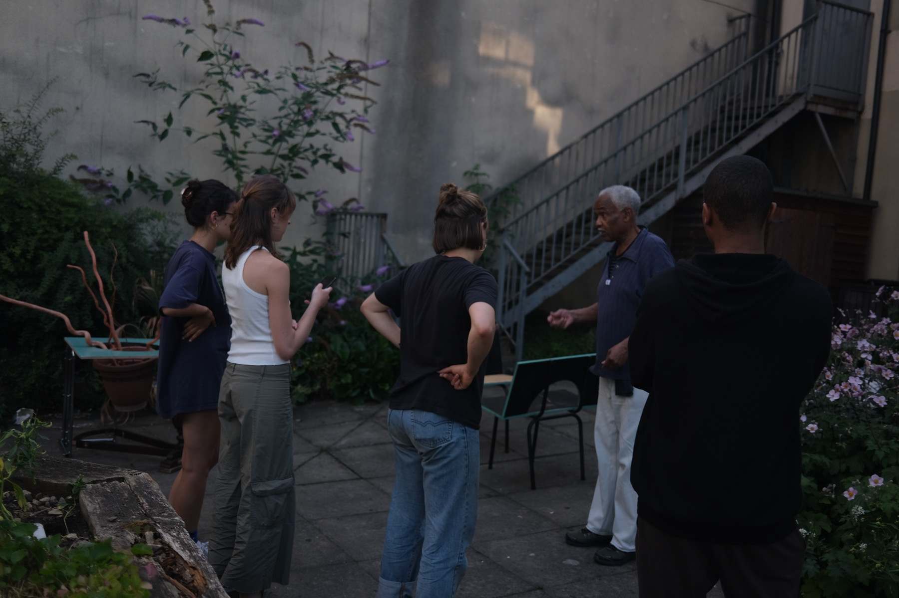
At P.I.M.P.S (Prototypes of Integrated Mobilia from Private Stuff) we asked if once privately owned objects can, through the process of merging and reassembly into something new, become commons?
We talked, collected material, documented it, played with it, talked, made many 10 second furniture prototypes using our bodies as the construction material, talked some more, figured out what was needed for us to make, made it, and then placed it in its new home.
This process of acquiring old objects from people or from places, meeting people of SADACCA, talking to them about what we wanted to do, what they would want or need from us, hearing their stories, thoughts, doubts and enthusiasm, making new objects for the entrance lobby and the daycare centre garden, assembling them in and in front of the G-mill, inviting people to see them and try them, is what we believe created an emotional connection of all of us to these objects. However, how to figure out if these new objects now are truly commons? Perhaps the way to find out is give them time, come back and talk again to people that are using them, see how they feel about them and analyse that.
Participants: Agnes Schubo, Bianca Patcas, Denitsa Baeva, Letizia Guido, Milica Rajković, Zizi, Ciprian-Rares Sas
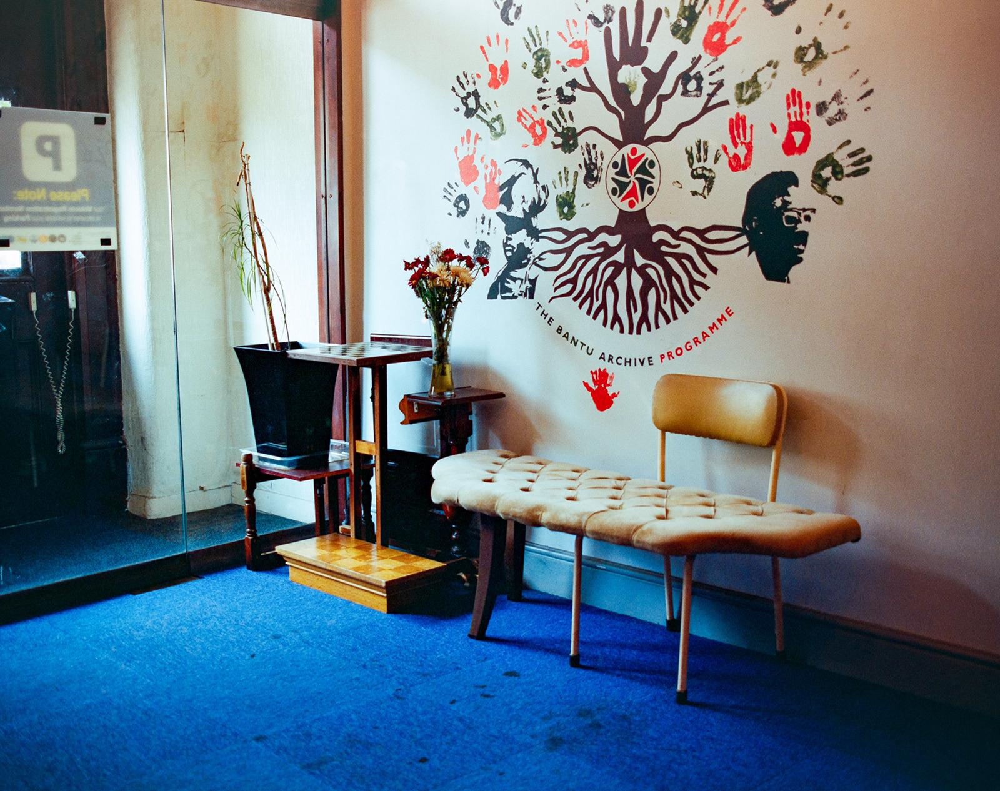
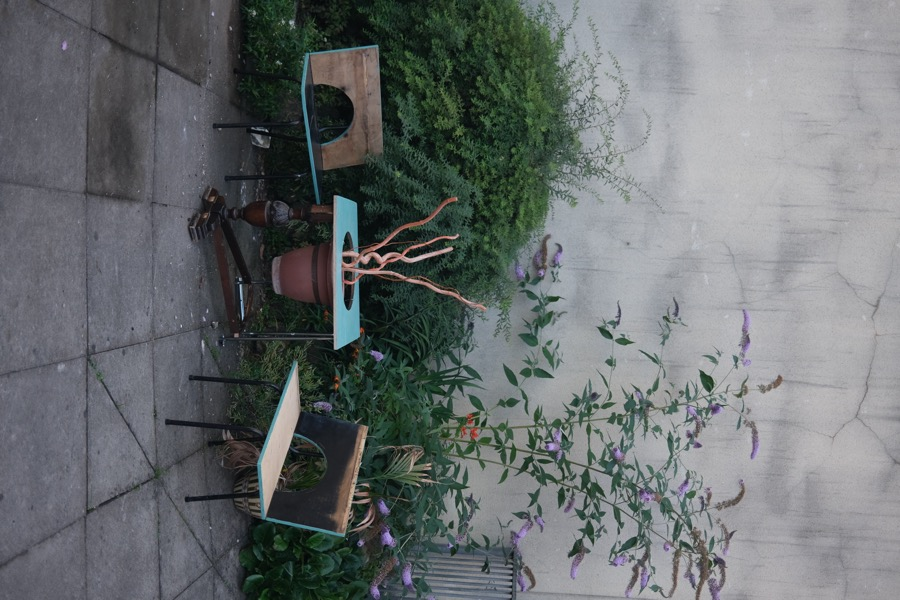
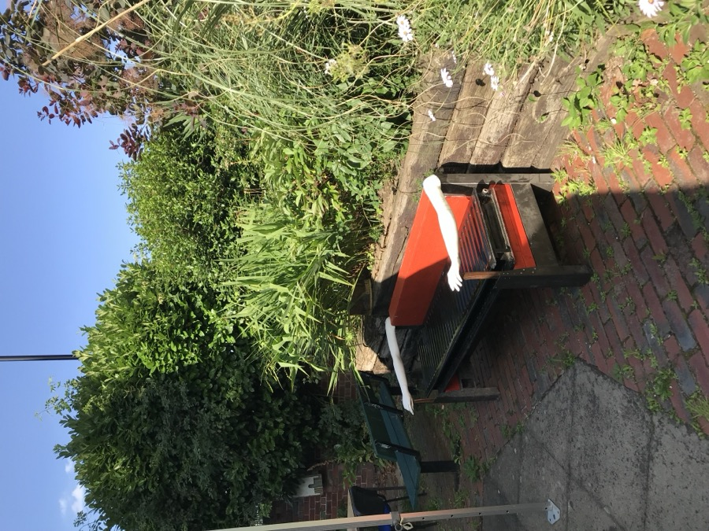
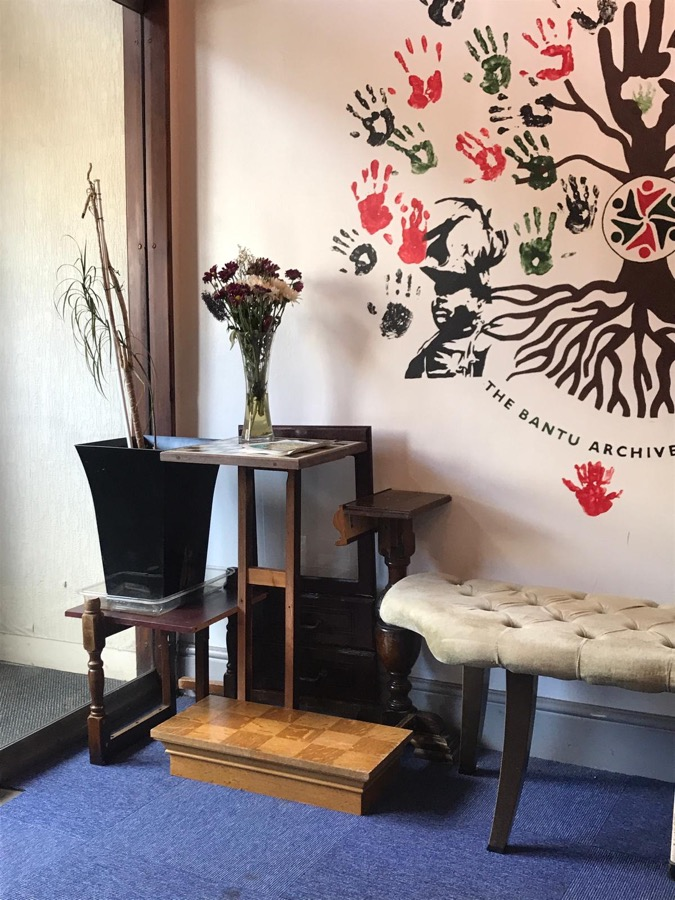
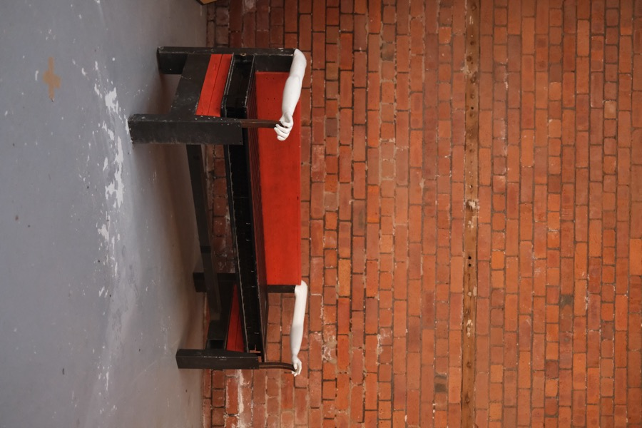
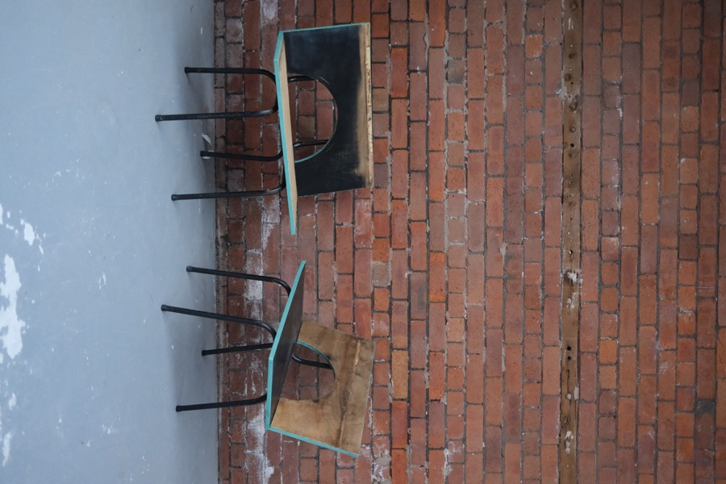
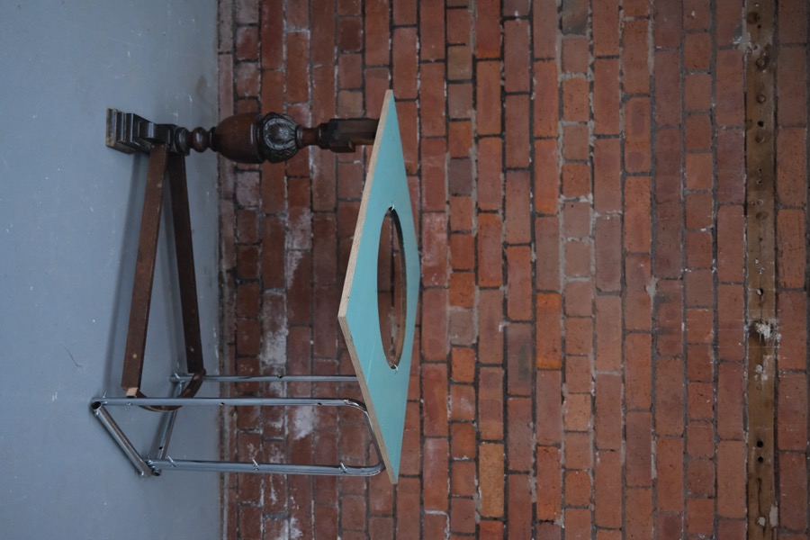
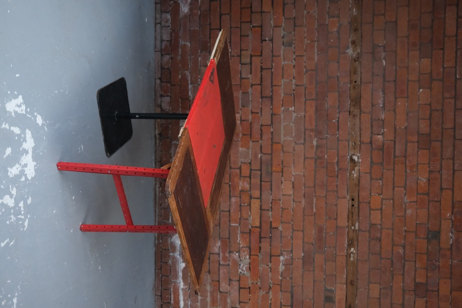
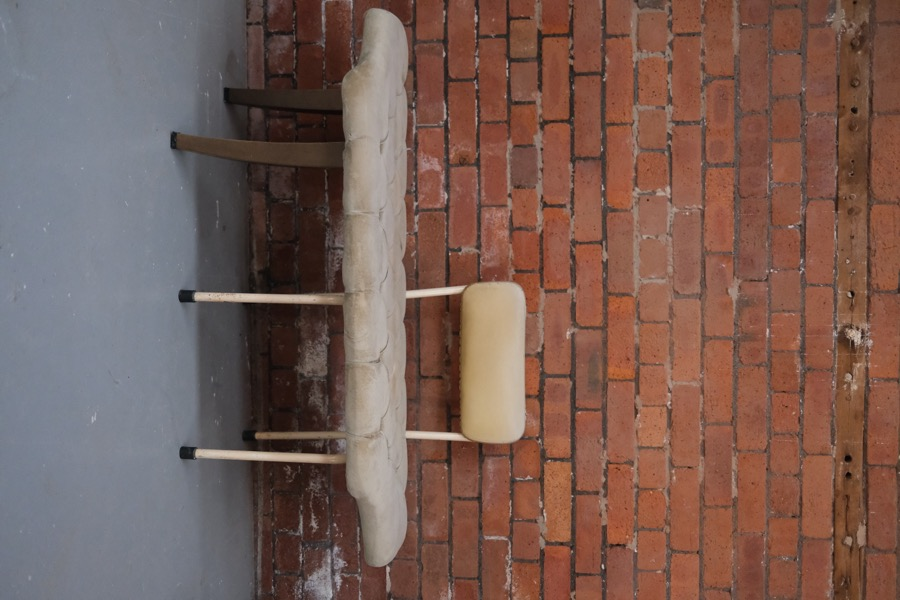
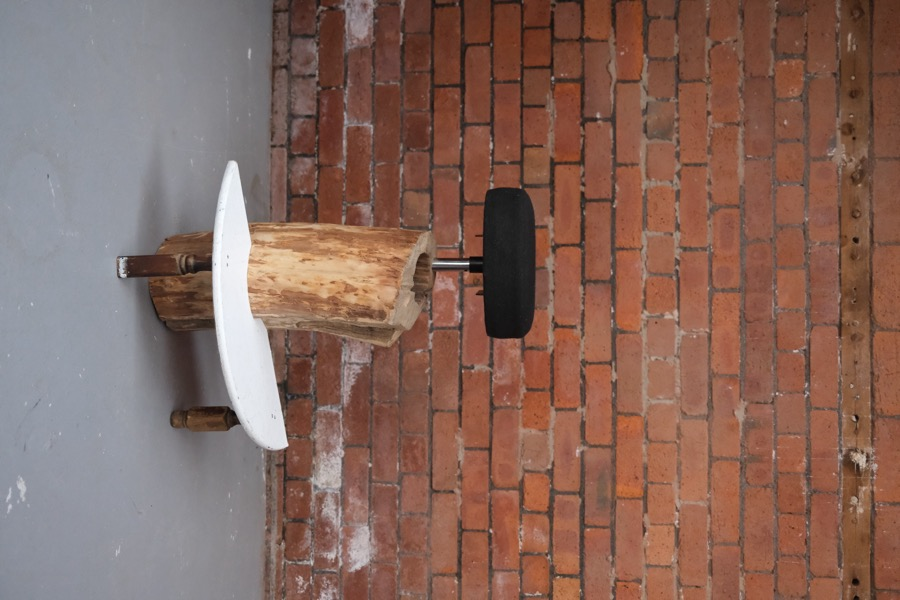
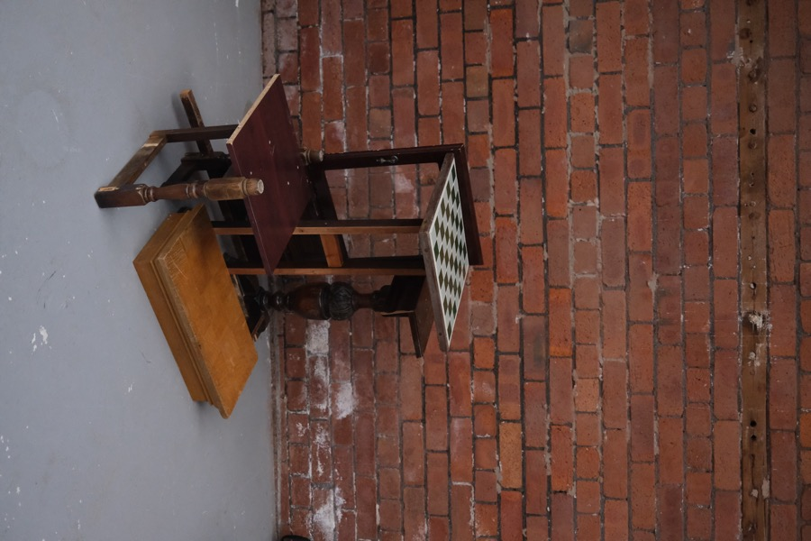